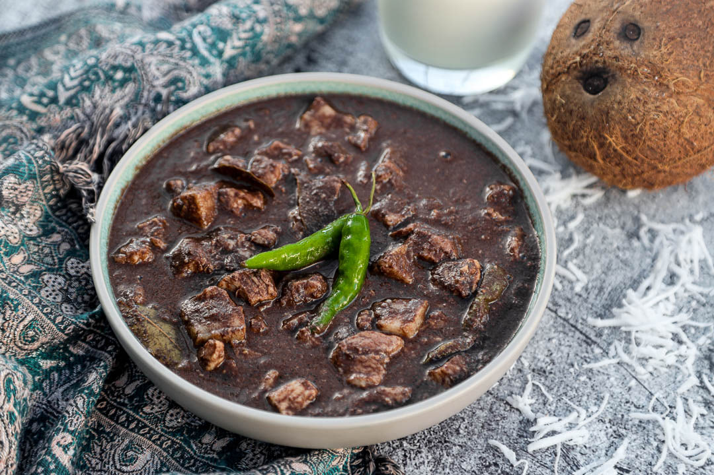

Dinuguan
Dinuguan is a rich, savory, and slightly tangy pork stew with a deeply dark, almost black sauce. Eaten nationwide but originating from indigenous nose-to-tail cooking practices, it utilizes pig's blood, vinegar, and various cuts of pork (often belly, snout, and offal). The vinegar balances the richness of the blood and prevents it from coagulating poorly. It is famously paired with steamed rice or Puto (sweet steamed rice cakes).

Gather
Ingredients
- Pork belly and/or pork offal, cut into small cubes
- Fresh pig's blood
- Cane vinegar
- Garlic, minced
- Onion, chopped
- Ginger, minced (optional but helpful for removing odors)
- Long green chilies (siling haba)
- Brown sugar (a pinch to balance the acidity)
- Pork broth or water
- Cooking oil
- Salt and pepper
Make it
Recipe
- Prepare the blood by placing it in a bowl and pouring in a small amount of vinegar. Stir well to prevent coagulation.
- Heat oil in a pot and sauté the garlic, onion, and ginger until fragrant.
- Add the pork pieces and sauté until they release their natural oils and turn slightly brown.
- Pour in the pork broth or water. Simmer until the meat is fully tender (about 30-40 minutes).
- Add the vinegar to the pot and allow it to boil for a few minutes without stirring.
- Lower the heat and slowly pour in the pig's blood while continuously stirring to prevent large lumps from forming.
- Add the green chilies, a pinch of brown sugar, salt, and pepper.
- Simmer for another 10 to 15 minutes until the sauce reduces and thickens. Serve hot.